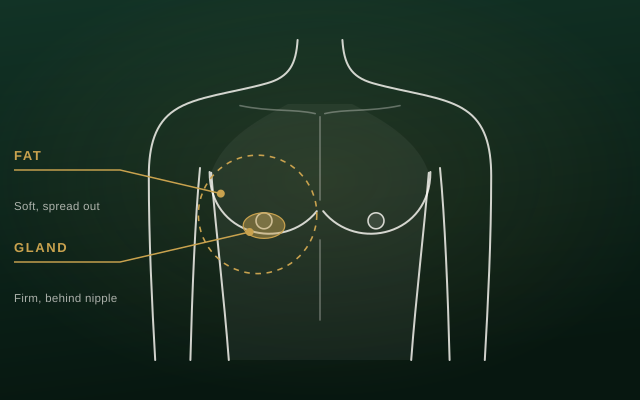
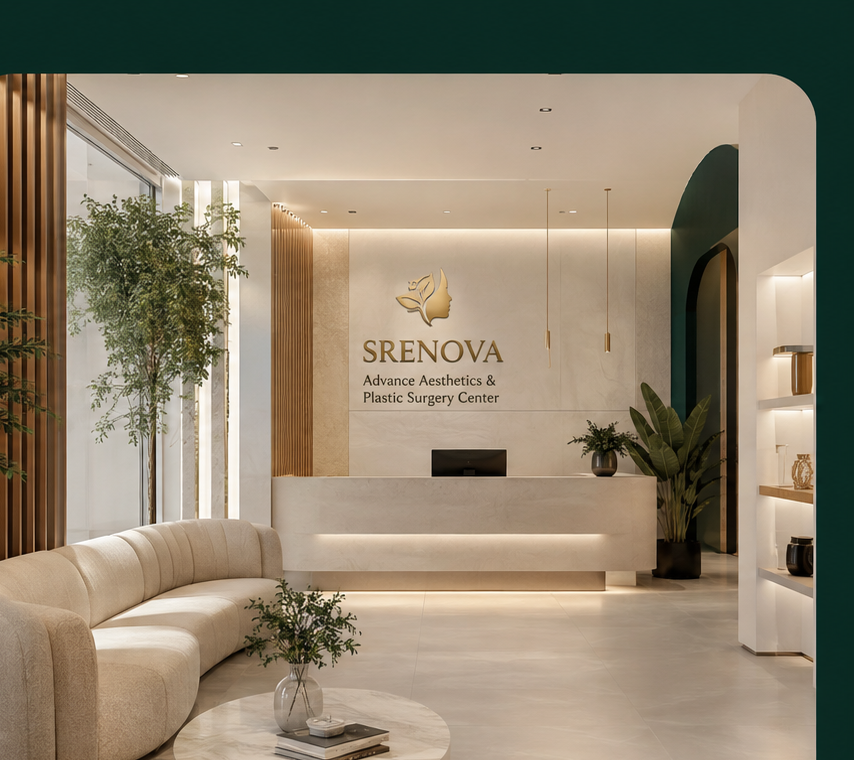
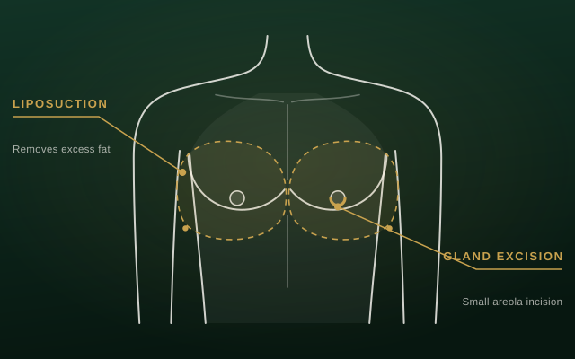
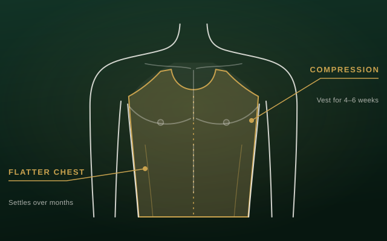

Step 01Chest assessment
Fat and gland content, skin quality, medications and hormone-related causes are reviewed.
Gynecomastia is the enlargement of breast tissue in men. It can be caused by excess fat, firm glandular tissue, or a mix of both — and the right surgical approach depends on which one is present.
Male chest reduction removes the excess tissue and reshapes the chest for a more masculine contour. It is one of the most commonly requested cosmetic procedures for men.


Step 01Fat and gland content, skin quality, medications and hormone-related causes are reviewed.

Step 02Liposuction, gland excision or both are chosen to match the tissue type and the shape you want.

Step 03Compression vest, activity restrictions and swelling timeline are explained before surgery.
Many men with gynecomastia are otherwise fit. Glandular tissue does not shrink with weight loss or chest workouts, which is why the fullness often stays no matter how much effort goes in.
Suitability depends on the cause, stable weight, general health and realistic expectations about the final contour.
Understanding the limits of the procedure helps set a realistic plan.
Removes excess fat and gland for a firmer contour.
Firm tissue needs direct removal, not only liposuction.
Good skin tone gives a smoother, tighter result.
Weight gain or steroids can bring fullness back.
Quick clarity before the consultation so the conversation is more useful.
Performed under anaesthesia by a specialist surgeon.
A firmer, more masculine chest contour.
Most return to desk work within a week; compression for 4–6 weeks.
Shape improves right away; final contour settles over 3–6 months.
Clear answers help patients make a more informed decision.
Not always. Some men have mainly fat (often called pseudogynecomastia), some have firm glandular tissue, and most have a mix of both. Gland tissue does not reduce with diet or exercise, which is why surgery is often needed.
Losing weight can reduce the fatty part of chest fullness, but it will not remove glandular tissue. If firm tissue remains behind the nipple after reaching a stable weight, surgery is usually the effective option.
Incisions are small and placed to be discreet — liposuction uses tiny entry points, and gland removal is usually done through the lower edge of the areola, where the scar blends with the natural colour change.
Most patients return to desk work within about a week. A compression vest is worn for 4–6 weeks, and heavy chest workouts are usually avoided for around 4–6 weeks. Swelling settles gradually over the following months.
Removed gland tissue does not grow back, so results are long-lasting. However, significant weight gain, anabolic steroids or certain medications can cause new fullness, so avoiding these triggers protects the result.
Liposuction can also contour the abdomen, flanks and other areas where stubborn fat remains despite diet and exercise.
Book a private SRENOVA consultation for an honest assessment of the cause, your suitability and realistic outcomes.